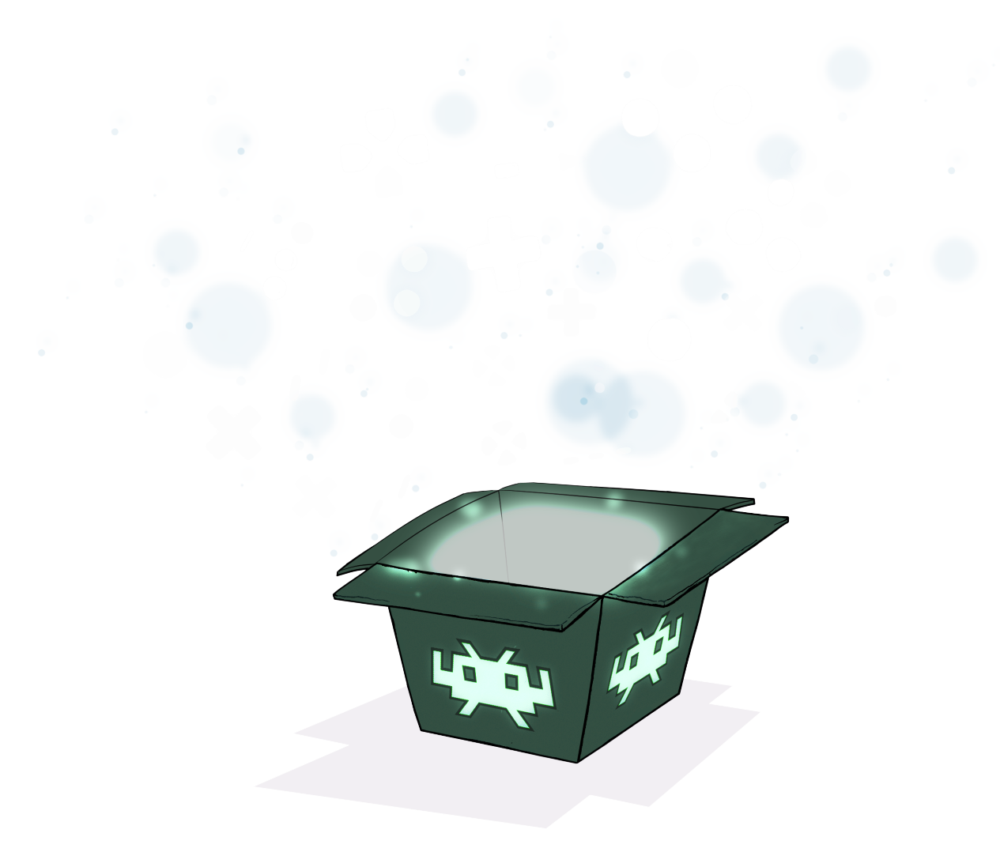

RetroArch is a frontend for emulators, game engines and media players.
Get started DownloadAmong other things, it enables you to run classic games on a wide range of computers and consoles through its slick graphical interface. Settings are also unified so configuration is done once and for all. In addition to this, you are able to run original game discs (CDs) from RetroArch.